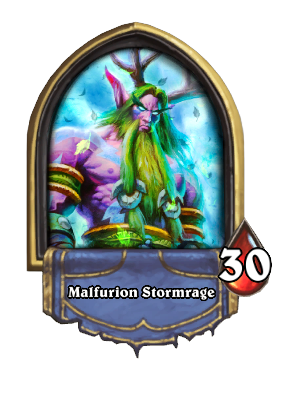
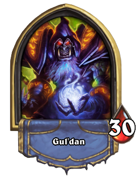
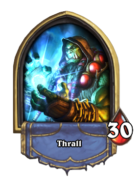

Mago
Cuando se trata de convertir maná en OH DIOS SE QUEMA, Jaina es insuperable. Sus mazos incluyen muchos hechizos de daño directo que lanzará alegremente a sus oponentes, incluidos algunos tableros muy potentes como Arcana Explosión y Flamestrike. Agregue a eso un Poder de héroe que hace poco trabajo a los minions pequeños y una variedad variada de Secretos, y usted tiene un oponente polifacético y letal.

Cazador
La música calma a la bestia salvaje, y para los oídos de Rexxar no puede haber música más dulce que el sonido de sus secuaces bestia que destrozan a su presa. Él es profundo y paradójico, es lo que estamos diciendo. Rexxar tiene acceso a buffs que convierten incluso a dóciles esbirros en temibles máquinas de matar, y derriba todos los objetivos que sus bestias le dejen con su carcaj lleno de hechizos de daño directo. ¡La caza está activada!

Paladín
Supongamos que eres un subordinado. ¿En qué mazo preferirías estar: Gul'dan, que probablemente te alimentará con sus demonios, o Uther, que te abultará, te curará y convocará muchos refuerzos al campo? Pensado así. Uther puede hacer que un minion débil golpee como un camión, y un minion fuerte gime con arrepentimiento. También tiene un suministro prácticamente ilimitado de reclutas Silver Hand a su disposición, por lo que nunca se quedará sin minions.

Guerrero
Como uno de los guerreros más formidables que Azeroth haya visto, las cosas que Garrosh trae a la mesa incluyen hachas de guerra, muchos secuaces sedientos de sangre y graves problemas de manejo de la ira. Eso no es hipérbole: el mazo de Garrosh literalmente prospera al tratar Y recibir daño. Y no te sorprendas si Garrosh hace que sus secuaces te ataquen con una locura alimentada por la sangre.

Druida
La versatilidad es el nombre del juego para Malfurion (bueno, no, técnicamente aún es Hearthstone, pero entiendes lo que estamos diciendo). Muchos de sus hechizos pueden tener uno de dos efectos, e incluso algunos de sus secuaces pueden cambiar de forma para satisfacer las necesidades tácticas del momento. Puede generar maná rápidamente e incluso superar a su oponente, permitiendo que Malfurion traiga poderosos hechizos de daño y despejes en la tabla. Ja!. Oso.

Brujo
La magia demoníaca es poderosa, pero a menudo tiene un precio considerable. Gul'dan probablemente sabe una o dos cosas al respecto. Tiene acceso a una cantidad asombrosa de secuaces demoníacos, pero a pesar de que son poderosos y, a menudo, baratos de convocar, siempre encuentran una manera de compensar la diferencia. Gul'dan puede establecer la ventaja de la tarjeta con bastante facilidad gracias a su Poder de Héroe, que hace que el viejo brujo sea un enemigo terrible.

Chamán
¿Cuál es el siguiente paso lógico después de salvar al mundo por sí solo de la destrucción total por, por ejemplo, la enésima vez? Siéntate y juega algunas cartas, por supuesto! La baraja de Thrall es una alegre bolsa de buffs surtidos, hechizos de daño, hechizos de curación y algunos súbditos duros para completar las cosas. Espera estar sorprendido cuando te enfrentas al ex jefe de guerra de la Horda y su bien equilibrado arsenal de hechizos y secuaces.

Sacerdote
Sabemos lo que estás pensando: es un sacerdote, ¿qué va a hacer? ¿Curarme hasta la muerte? Es cierto que Anduin tiene hechizos de curación excepcionalmente fuertes en su mazo, pero sus hechizos de las Sombras borrarán esa sonrisa de tu cara en un abrir y cerrar de ojos. Y luego usará sus excelentes hechizos de control de la tabla como Mind Control para acabar contigo. Con tus propios minions.

Pícaro
Los pícaros son maestros de ataques furtivos y Valeera no es una excepción. No solo su mazo incluye excelentes hechizos de daño directo y potentes habilidades de eliminación, sus cartas también pueden combinarse entre sí para obtener un efecto mortal. Para empeorar las cosas (para sus oponentes), su habilidad para invocar a una daga significa que, en caso de apuro, este ágil pícaro puede encargarse fácilmente del asunto.